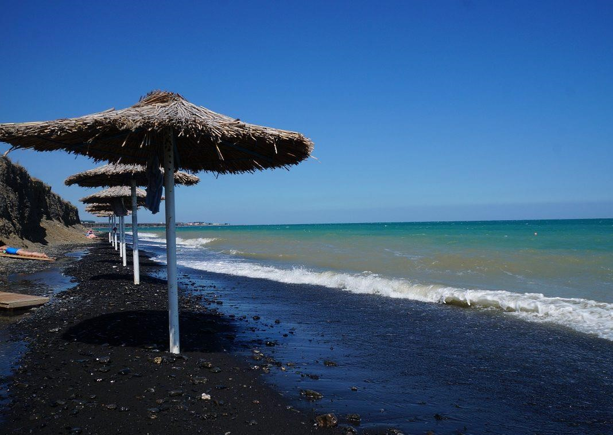
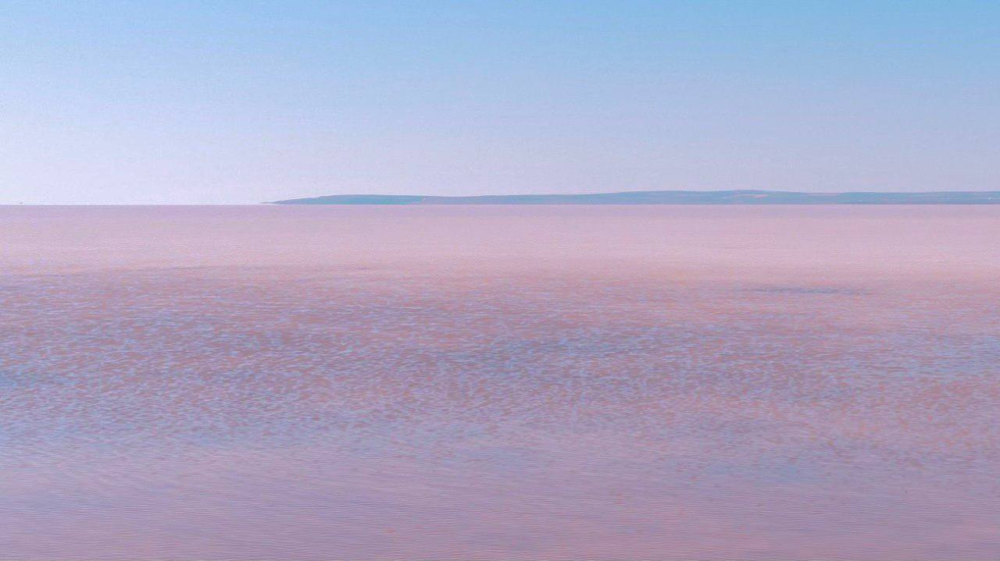
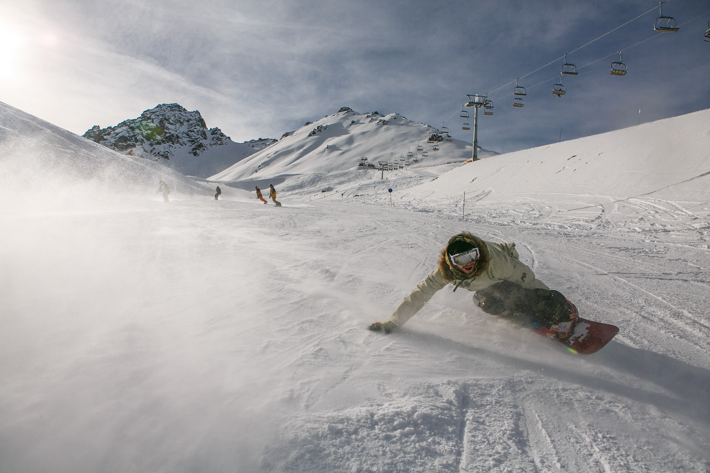

| Place | Rating on Google Maps | Location |
| Lake Alakol | 4,7 / 5 (507) | Almaty and East Kazakhstan regions |
| Lake Kobeituz | 4,6 / 5 (38) | Akmola region |
| Shymbulak | 4,8 / 5 (11,908) | Almaty |
If you are tired of the regular golden sandy beaches that are everywhere, then it’s high time to get acquainted with the black pebble beach of the Lake Alakol, which is in the south-west of Kazakhstan. The lake has not only an unusual coastline, but also healing powers as well. The black beach attracts people with common cold and skin diseases, nervous breakdown, and all those, who love meditations. Even Soviet cosmonauts used to come to the lake after their flights to get rehabilitated here.
Alakol Nature Reserve was established here to preserve rare types of birds, so you can find famous silver bass in its waters. If you come to the lake at the beginning of May, you can join the many bird watchers that come for the “Wings of Alakol” festival. This event attracts not only bird watchers but also journalists, yoga practitioners, and musicians. This is how a season on Alakol begins. Further is summer - a time of the sun, swimming and water entertainments. In autumn, there is another festival celebrated on the first weekends of September – “Okunkol”, where recreational fishermen catch the famous silver bass.
Lake Kobeytuz is a salt lake in Kazakhstan. It is located at an altitude of 253 meters above sea level, on the territory of the Ereymentau District of the Akmola Region, northeast of the city of Ereymentau. The origins of the name come from the local Kazakh language in which "kobei" means multiply and "tuz" means salt.
Due to the high concentration of salt, the water of Kobeituz could keep a person afloat, as in the Dead Sea. But swimming in it is unrealistic: the lake is very shallow, the maximum depth is only about 20 cm, that is, you can enter the water only knee-deep. Mostly young people come here for beautiful photographs. Moreover, in order for the color of Kobeituz to be as bright as possible, it is recommended to travel in sunny weather. They say that it is then that microorganisms most actively release their pigment.
Of course, the city of Almaty, surrounded by mountains, offers the greatest variety of all kinds of winter activities. The slopes of Ile Alatau near Almaty offer excellent conditions and opportunities for skiing and snowboarding. Here you will find various ski resorts, gentle and steep descents, snow of wonderful quality, unique landscape, and sunny weather.
In the picturesque tract of Shymbulak, the famous resort of the same name is located. Its trails are considered to be one of the most difficult in the world. At an altitude of 2260 meters, the weather is always sunny, and you can get a beautiful tan here even in winter. Snow is 1.5-2 meters deep. The height of the ski season begins in mid-November and ends in early April. There are four ski lifts, (two twin-chairlifts, one single-chairlift, and a cable car), including a towing lift, which can be used for free. There are cafes, restaurants and rest houses as well. The ski season here opens with a traditional race. Before the actual descent, its participants need to run 20 meters to their skis or snowboards, having full protective gear on.
In the ski resort in the Talgar Gorge, in addition to trails of varying difficulty, there is a gondola cableway that allows you to enjoy the beautiful scenery of the mountains during the ascent. In another large mountain resort, built according to the modern European standards, the total length of trails reaches 37 kilometers. Cable cars, snowmobiles and ATVs, entertainment programs and a wide range of services for a comfortable stay are available here.
Near Almaty, you can find more affordable options for skiing on sleds, balloons, and snowboards. Google will help you find a wide variety of services for skiing and snowboarding in Almaty and near the city.